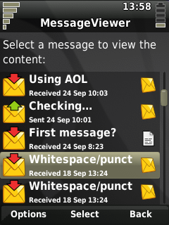

|
Home · All Namespaces · All Classes · Grouped Classes · Modules · Functions | |
Files:
The MessageViewer example shows how to create a Qt Extended application which accesses messages stored by the Qt Extended Messaging library. The example application searches for, and displays the properties of messages stored by Qt Extended, but uses Qt Extended services to delegate the display of the messages to another application.

The example application uses the Qt Extended PIM library's Contacts listing to list the messages stored on the device, by contact. The application starts by allowing the user to select a contact from those stored on the device. Once a contact has been selected, a list of all the messages exchanged with that contact is displayed. When a message is selected from this list, the application creates a QtopiaServiceRequest to request that another application display the content of the selected message.
The application is structured as a stack of widgets, contained by a QStackedWidget. We need two widgets in our stack: one to select a contact from a list, and another to select a message from a list.
The contact selector widget uses a QContactListView to present a list of available contacts:
class ContactSelector : public QWidget
{
Q_OBJECT
public:
ContactSelector(QWidget* parent = 0)
: QWidget(parent), listView(new QContactListView)
{
QLabel* label = new QLabel;
label->setText(tr("Select a contact to view messages exchanged:"));
label->setWordWrap(true);
listView->setModel(&model);
listView->setFrameStyle(QFrame::NoFrame);
connect(listView, SIGNAL(activated(QModelIndex)), this, SLOT(activated(QModelIndex)));
QVBoxLayout* layout = new QVBoxLayout(this);
layout->addWidget(label);
layout->addWidget(listView);
}
signals:
void contactSelected(const QContact& contact);
protected slots:
void activated(const QModelIndex& index) { emit contactSelected(model.contact(index)); }
private:
QContactModel model;
QContactListView* listView;
};
Once we have selected a contact, we will display a listing of the messages that have been exchanged with the contact. For this, we need a stackable widget to list messages:
class MessageSelector : public QWidget
{
Q_OBJECT
public:
MessageSelector(QWidget* parent = 0)
: QWidget(parent), label(new QLabel), listView(new QListView)
{
label->setWordWrap(true);
listView->setModel(&model);
listView->setItemDelegate(&delegate);
listView->setSelectionMode(QAbstractItemView::SingleSelection);
listView->installEventFilter(this);
connect(listView, SIGNAL(activated(QModelIndex)), this, SLOT(activated(QModelIndex)));
QVBoxLayout* layout = new QVBoxLayout(this);
layout->addWidget(label);
layout->addWidget(listView);
}
signals:
void listPrepared();
void messageSelected(const QMailMessageId& id);
void done();
public slots:
void listMessages(const QContact& contact);
protected slots:
void activated(const QModelIndex& index) { emit messageSelected(model.messageId(index)); }
protected:
virtual bool eventFilter(QObject* obj, QEvent* event);
private:
MessageModel model;
MessageDelegate delegate;
QLabel* label;
QListView* listView;
};
The MessageSelector uses a QListView to present a listing of messages associated with a specific contact. To do this, we need to create a model of message data that the QListView will present. Our class therefore contains a model object, of type MessageModel, and an object of type MessageDelegate, whose responsibility is to render each element in the list view using the data of each message.
The MessageModel class is derived from QStandardItemModel, which is extended with a simple interface. With setContact(), we supply the model with a QContact, and it creates a listing of messages associated with that contact. It also provides the utility function messageId() which we use to extract the identifier of a message from the listing, given an index into the model.
class MessageModel : public QStandardItemModel
{
Q_OBJECT
public:
explicit MessageModel(QObject* parent = 0);
virtual ~MessageModel();
void setContact(const QContact&);
bool isEmpty() const;
QMailMessageId messageId(const QModelIndex& index);
};
The Qt Extended Messaging library uses QMailMessageId objects to identify messages stored in the system. QMailMessageId objects can be default-constructed to an uninitialised state that does not identify any message, or they can contain the identifier for any message stored in the device. When we wish to view a message, the identifier for that message is all that we will need in order to request that another application display the message.
The MessageModel class uses a helper class to contain the data elements relevant to each individual message that we will list. The helper class, MessageItem, is derived from QStandardItem:
class MessageItem : public QStandardItem
{
public:
explicit MessageItem(const QMailMessageId& id);
virtual ~MessageItem();
QMailMessageId messageId() const;
private:
QMailMessageId id;
};
The MessageModel::setContact() member function does the work of finding messages associated with a contact, and adding them to our data model. To find messages, we use the QMailStore::queryMessages() function. One of the overloads of this function takes a QMailMessageKey parameter, which contains the filtering information needed to locate a subset of the device's messages. A QMailMessageKey contains three data elements: a message property, a value, and a relation to compare the value to the specified property of each message. More complicated filters can be created by logically composing QMailMessageKey objects, with AND and OR operators.
For our application, we want to find messages that are related to the contact that the user has chosen. So, we will find messages that fit into either of two categories: those that were sent to the contact, and those that were received from the contact.
void MessageModel::setContact(const QContact& contact)
{
clear();
if (contact.phoneNumbers().isEmpty() && contact.emailList().isEmpty()) {
// Nothing to match for this contact
return;
}
// Locate messages whose sender is this contact
QMailMessageKey msgsFrom;
// Locate messages whose recipients list contains this contact
QMailMessageKey msgsTo;
The contact may have numerous phone numbers, so we pass over the list of phone numbers stored for this contact, and for each phone number, we add another filter criterion to our query. For messages we received from the contact, we add a QMailMessageKey matching where the message's Sender property is equal to the current phone number (note that the Equal relation is the default, so we don't need to specify it explicitly.) For messages that we sent to the contact, we add a QMailMessageKey matching where the message's Recipients property contains the current number. Unlike Sender, a messages's Recipients property can contain multiple contact's addresses, so we need to use the Includes relation instead of the default Equal.
// Match on any of contact's phone numbers
foreach(const QString& number, contact.phoneNumbers().values()) {
msgsFrom |= QMailMessageKey(QMailMessageKey::Sender, number);
msgsTo |= QMailMessageKey(QMailMessageKey::Recipients, number, QMailDataComparator::Includes);
}
We also want to locate messages exchanged with this contact using email, so we add further criteria to our filters for each email address that is stored for this contact:
// Match on any of contact's email addresses
foreach(const QString& address, contact.emailList()) {
msgsFrom |= QMailMessageKey(QMailMessageKey::Sender, address);
msgsTo |= QMailMessageKey(QMailMessageKey::Recipients, address, QMailDataComparator::Includes);
}
Now we have created the message filters we want, we use the QMailStore::queryMessages() function to locate the matching messages. This function applies the criteria of the supplied QMailMessageKey to each message stored by the Qt Extended Messaging library, and returns a list containing the QMailMessageId of each matching message. An overload of the function takes a second parameter: a QMailMessageSortKey which determines the order in which the matching messages are returned. We will use this option to sort the messages into reverse chronological order.
// Sort messages by timestamp, newest to oldest QMailMessageSortKey sort(QMailMessageSortKey::TimeStamp, Qt::DescendingOrder); // Fetch the messages matching either of our queries, and return them sorted QMailMessageIdList matches(QMailStore::instance()->queryMessages(msgsFrom | msgsTo, sort));
We then take each QMailMessageId from the list, and create a new MessageItem object from each one, to add to our model:
// Add each returned message to our data model
foreach (const QMailMessageId& id, matches)
appendRow(new MessageItem(id));
}
The MessageItem class stores the data we need to present each message in our QListView. In order to present a useful listing of the message, we need to extract some data from the message. We do this using the QMailMessageMetaData class, which has a constructor taking a QMailMessageId. Since we only need summary information to present the message in the list view, we only want to load the meta data for the message identified by the QMailMessageId. If we needed to access the content of the message, we would instead need to create an instance of the QMailMessage class.
Once we have loaded the message information, we extract some useful elements (such as the message subject, the message timestamp, and the type of the message), and store those items for the QListView delegate to use when rendering the message item:
MessageItem::MessageItem(const QMailMessageId& id)
: QStandardItem(), id(id)
{
static QIcon sentMessageIcon(":icon/qtmail/sendmail");
static QIcon receivedMessageIcon(":icon/qtmail/getmail");
static QIcon smsIcon(":icon/txt");
static QIcon mmsIcon(":icon/multimedia");
static QIcon emailIcon(":icon/email");
static QIcon instantIcon(":icon/im");
// Load the meta data for this message
QMailMessageMetaData message(id);
// Determine the properties we want to display
QIcon* messageIcon = &smsIcon;
if (message.messageType() == QMailMessage::Mms)
messageIcon = &mmsIcon;
if (message.messageType() == QMailMessage::Email)
messageIcon = &emailIcon;
if (message.messageType() == QMailMessage::Instant)
messageIcon = &instantIcon;
bool sent(message.status() & QMailMessage::Outgoing);
QDateTime messageTime(message.date().toLocalTime());
QString action(qApp->translate("MessageViewer", sent ? "Sent" : "Received"));
QString date(QTimeString::localMD(messageTime.date()));
QString time(QTimeString::localHM(messageTime.time(), QTimeString::Short));
QString sublabel(QString("%1 %2 %3").arg(action).arg(date).arg(time));
// Configure this item
setIcon(sent ? sentMessageIcon : receivedMessageIcon);
setText(message.subject());
setData(sublabel, MessageDelegate::SubLabelRole);
setData(*messageIcon, MessageDelegate::SecondaryDecorationRole);
}
The MessageDelegate class simply takes the data items stored by each MessageItem instance, and uses them to render a representation of the message.
Now that we have widgets to list contacts and messages, we simply need to connect them together:
MessageViewer::MessageViewer(QWidget *parent, Qt::WFlags f)
: QWidget(parent, f),
contactSelector(new ContactSelector),
messageSelector(new MessageSelector)
{
setupUi(this);
// Connect our components
connect(contactSelector, SIGNAL(contactSelected(QContact)), messageSelector, SLOT(listMessages(QContact)));
connect(messageSelector, SIGNAL(listPrepared()), this, SLOT(showMessageList()));
connect(messageSelector, SIGNAL(messageSelected(QMailMessageId)), this, SLOT(viewMessage(QMailMessageId)));
connect(messageSelector, SIGNAL(done()), this, SLOT(showContactList()));
widgetStack->addWidget(contactSelector);
widgetStack->addWidget(messageSelector);
QVBoxLayout* layout = new QVBoxLayout(this);
layout->addWidget(widgetStack);
showContactList();
}
void MessageViewer::showContactList()
{
widgetStack->setCurrentWidget(contactSelector);
}
When we have a contact selected from our contact list, we create a list of messages for that contact. This is handled by the MessageSelector::listMessages() function:
void MessageSelector::listMessages(const QContact& contact)
{
model.setContact(contact);
if (model.isEmpty()) {
label->setText(tr("No messages exchanged with %1").arg(contact.label()));
} else {
listView->selectionModel()->select(model.index(0, 0), QItemSelectionModel::Select);
listView->scrollToTop();
label->setText(tr("Select a message to view the content:"));
}
emit listPrepared();
}
When the message list has been prepared, we move our message list to the top of the widget stack, in MessageViewer::showMessageList():
void MessageViewer::showMessageList()
{
widgetStack->setCurrentWidget(messageSelector);
}
Finally, we handle the event where the user selects a message from our list. Rather than displaying the message ourself, we will use the QtopiaServiceRequest mechanism to request that another application handle this task for us. The Messages service exports a viewMessage function, which takes a QMailMessageId object as a parameter; we respond to the user's selection by invoking this service with the identifier of the message that they selected:
void MessageViewer::viewMessage(const QMailMessageId& id)
{
// Request that some application display the selected message
QtopiaServiceRequest req( "Messages", "viewMessage(QMailMessageId)" );
req << id;
req.send();
}
See also MessageNavigator Example.
| Copyright © 2009 Trolltech | Trademarks | Qt Extended 4.4.3 |